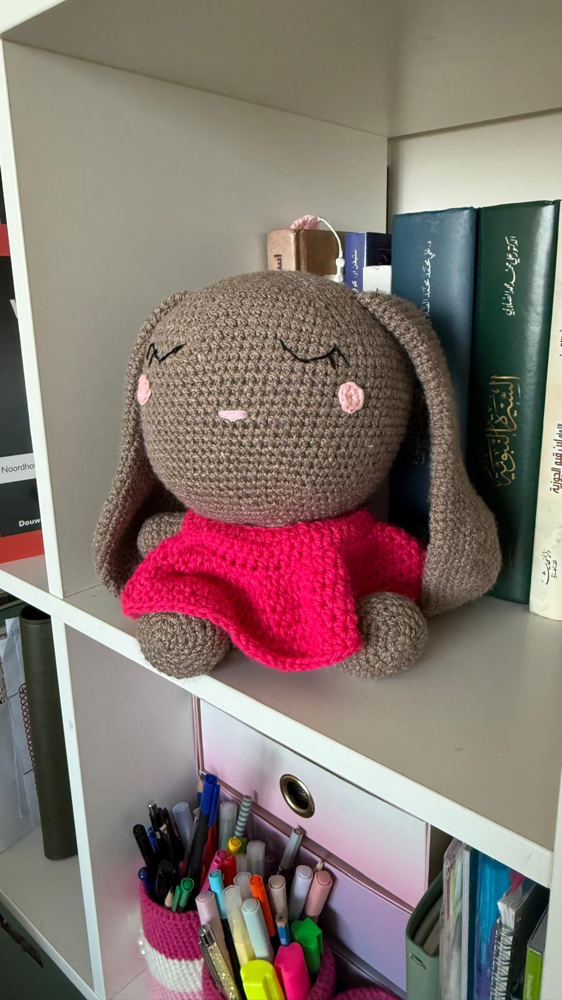
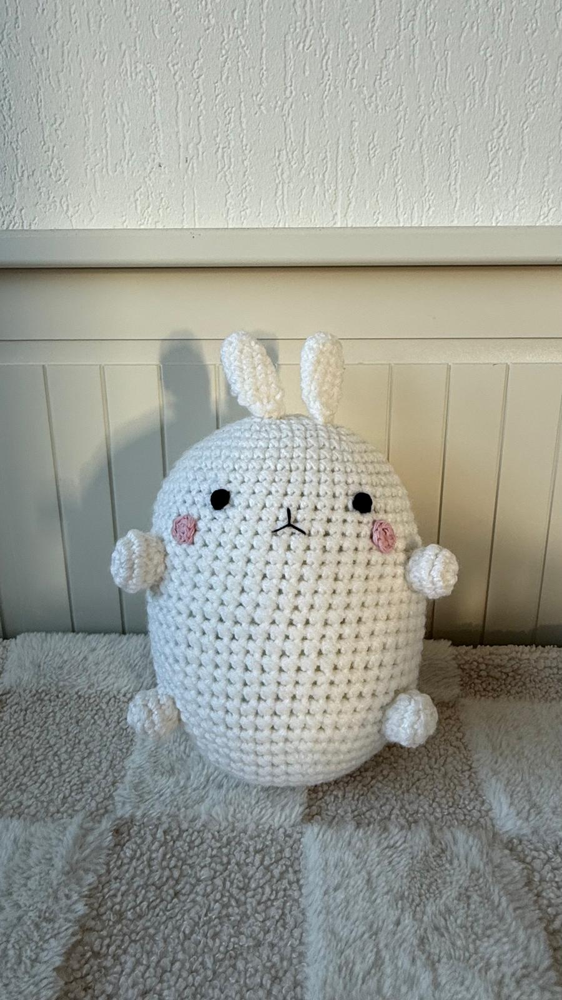
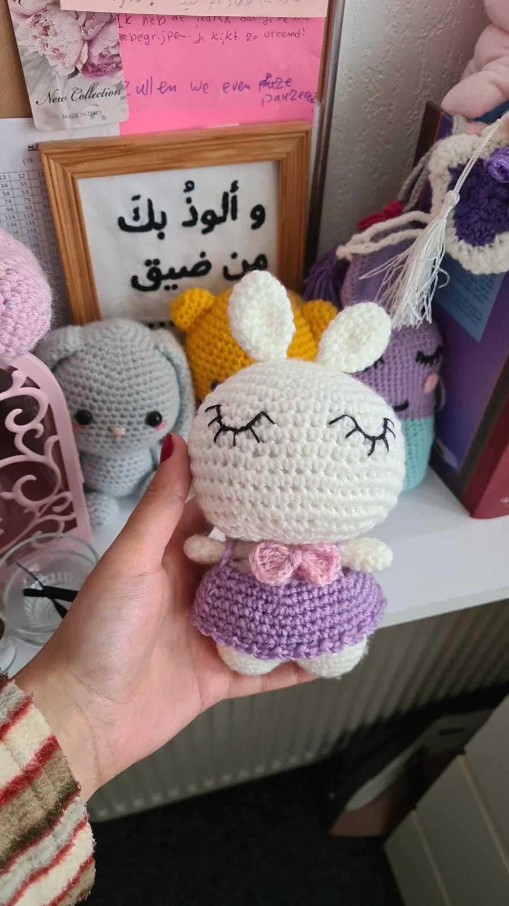
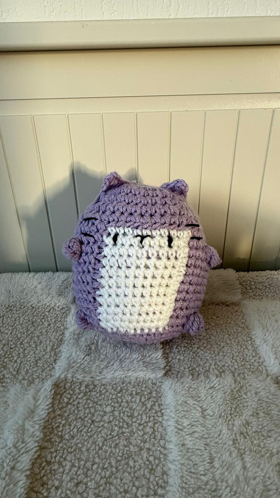
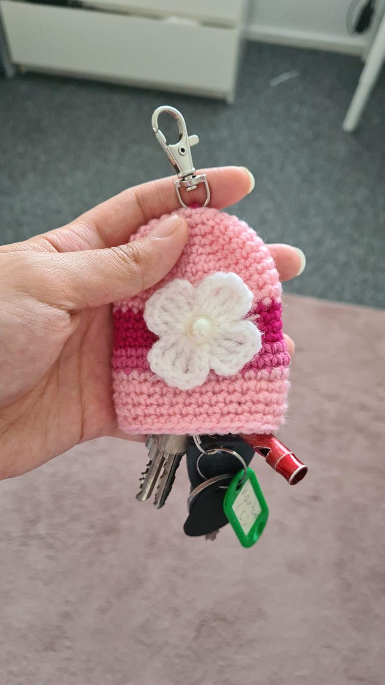
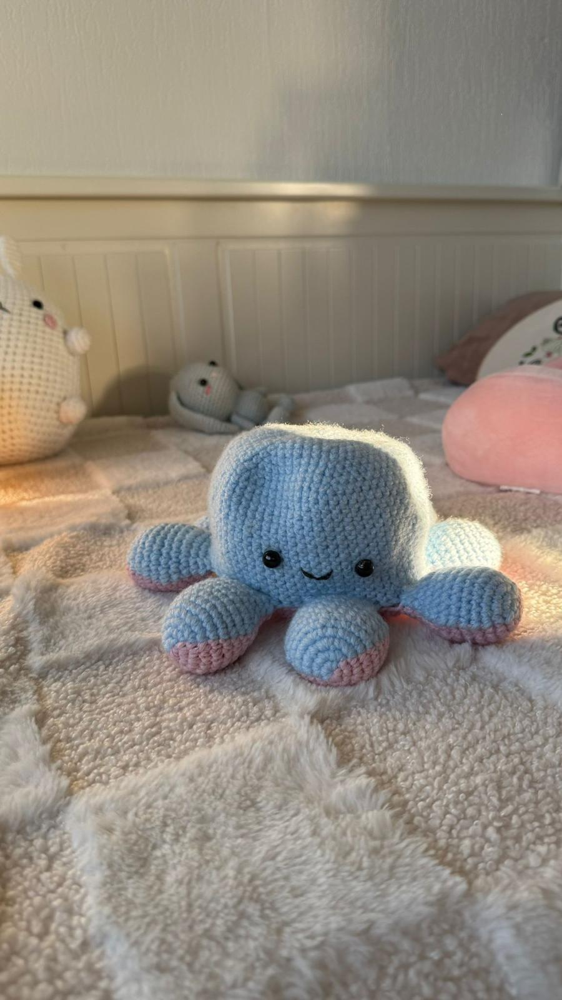

Alles begint met één draad
-

amigurumi crochet big bunny
-

amigurumi molang
-

amigurumi crochet small bunny
-

amigurumi kat
-

acrochet sleutelhanger
-

amigurumi octopus
3 draden die mij zouden helpen groeien
-
Prototypen en uitwerken
-
Oriënteren en begrijpen
-
Samen ontwerpen